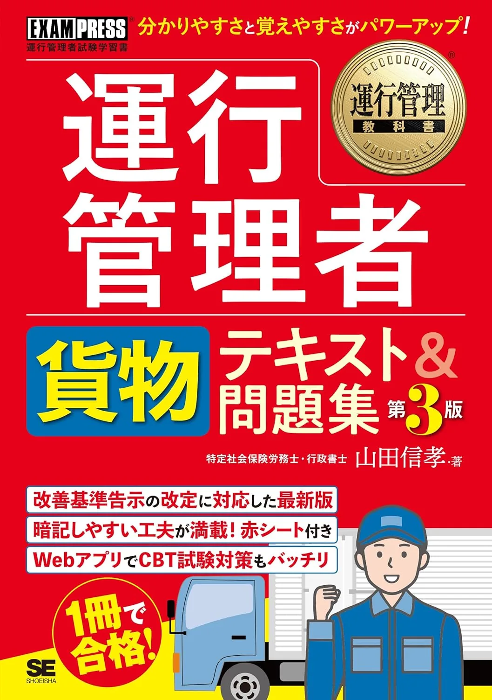
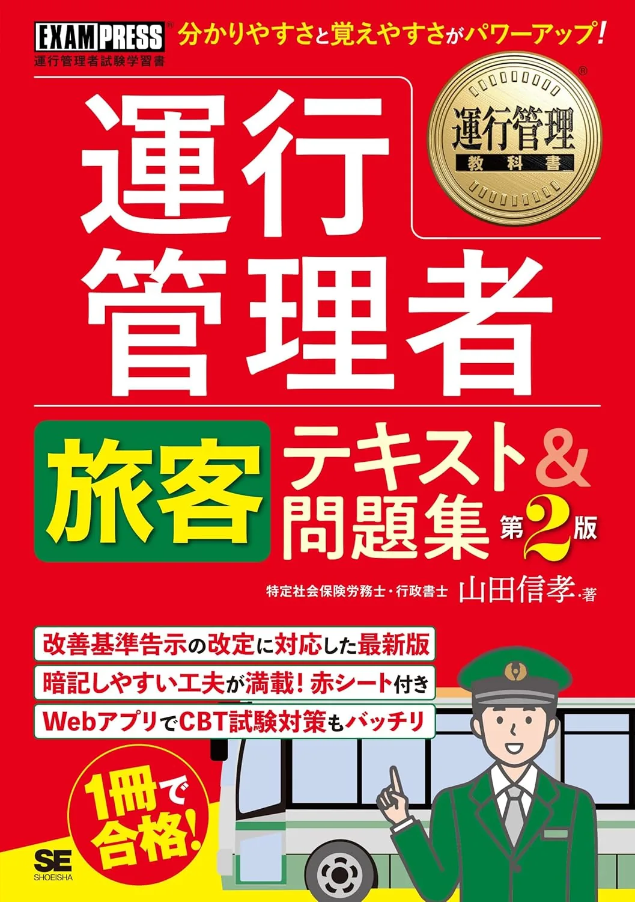

運行管理者試験のおすすめテキスト3選【貨物・旅客2026】
2026年度版のテキスト3冊を、章立て・解説量・演習接続で比較します。CBTは四肢択一で、1回30問・90分、合格は18/30（60％）以上です。受験手数料は6,000円＋システム利用料660円＝6,660円（要項で再確認）。出題範囲は運行管理者試験センター（公式）が正本です。価格・在庫は購入前に各Amazonページでご確認ください。
この記事の信頼性について
| 執筆 | 運管マスター編集部（資格学習サイトの編集チーム） |
|---|---|
| 確認 | 公式情報確認担当（公開前に一次情報との照合を行う担当者） |
| 事実確認日 | 2026-06-12 |
| 主な参照元 |
11冊を決める3点チェック — 12週逆算
テキスト選びは、試験センター要項を確認したあとの3点チェックから始めます。週10時間なら、通勤30分×5＋土曜90分が現実的な配分です。
| 観点 | 確認内容 |
|---|---|
| 区分 | 貨物/旅客と表紙の表記 |
| 分野 | 目次が要項5分野と一致 |
| 演習接続 | 同系統の問題集へ進めるか |
要項の5分野表と3冊の目次を突き合わせ、その3点で1冊を決定する、という流れにしてください。
おすすめテキスト3選（比較）
価格・在庫・版情報は執筆時点（2026-06-04）のAmazon税込参考です。購入前に必ず販売ページでご確認ください。
| 順位 | 商品名 | 価格（税込参考） | ページ数 | 向いている人 |
|---|---|---|---|---|
| 1 | 2026年版 ユーキャンの運行管理者＜貨物＞ 合格テキスト&問題集 | ¥3,080 | 512 | 貨物試験でALL-in-one型から始めたい初学者 |
| 2 | 運行管理教科書 運行管理者＜貨物＞テキスト&問題集 第3版 | ¥3,300 | 560 | 貨物向けに解説の厚みと演習量のバランスを重視する人 |
| 3 | 運行管理教科書 運行管理者＜旅客＞テキスト&問題集 第2版 | ¥3,300 | 544 | 旅客試験受験者で体系的に学びたい人 |

2026年版 ユーキャンの運行管理者＜貨物＞ 合格テキスト&問題集
- 貨物5科目を1冊で学べる定番テキスト&問題集
- ユーキャン系列で過去6回問題集と章立てが揃いやすい
- 図表中心で運行管理の全体像をつかみやすい

運行管理教科書 運行管理者＜貨物＞テキスト&問題集 第3版
- 運行管理教科書シリーズで条文・数値の整理に向く
- テキストと問題集がセットで復習サイクルを組み立てやすい
- CBT移行後も基礎理解の土台として使える

運行管理教科書 運行管理者＜旅客＞テキスト&問題集 第2版
- 旅客5科目を教科書形式で段階的に学べる
- 貨物合格者が旅客のみ受験するときの本格教材として選ばれやすい
- 翔泳社貨物版と並行して科目差分を比較しやすい
23冊のタイプ別 — 週次時間の当て方
2026年度版の3冊は、週ごとの使い方が異なります。いずれも最新版を選び、中古は版を確認します。
| タイプ | 向く受験生 |
|---|---|
| ユーキャン貨物 | 初学者・オールインワン |
| 翔泳社貨物 | 解説厚め・条文整理 |
| 翔泳社旅客 | 旅客のみ本格 |
週10時間なら、ユーキャンは平日30分×5＋土曜90分、翔泳社貨物は条文章20分＋土曜演習60分が目安です。翔泳社旅客は貨物合格後の分野差分の比較に充て、過去問の使い方の30問計測につなげてください。
31位 ユーキャン貨物 — 問題集を縦串にする
2026年版 ユーキャンの運行管理者＜貨物＞合格テキスト&問題集（512頁・Amazon税込参考3,080円・4426616654）は、貨物の5分野を1冊で学べます。
| 強み | 弱み・注意 |
|---|---|
| 過去6回問題集と縦串◎ | ページ量に時間設計が必要 |
| 図表で全体像◎ | 他社問題集と章がズレる |
| 初学者の第一候補 | 価格はAmazonで要確認 |
事業法の第1章30分、土曜に演習10問と進め、12週後の30問計測で18/30を目指します。演習はおすすめ問題集3選へつないでください。
42位・3位 翔泳社貨物・旅客
「運行管理教科書 運行管理者＜貨物＞テキスト&問題集 第3版」（560頁・3,300円参考・479818456X）と、＜旅客＞第2版（544頁・4798184578）です。
| 教材 | 向く人 |
|---|---|
| 翔泳社貨物 | ②未達分野の深読み |
| 翔泳社旅客 | 旅客CBT本格 |
| 併用 | 貨物合格後の差分 |
30問計測で事業法（1）が4/8なら、翔泳社貨物の許可章20分→20問で補強します。旅客CBTなら、4798184578を早めに決定してください。
5テキスト選び記事との役割分担 — 2列比較表
一般のテキスト選びと、本記事（Amazon3冊比較）は、2記事で役割を分けます。テキスト選び記事は、要項照合・1冊完走・テキスト先・問題集後を扱います。本記事はユーキャン・翔泳社3冊の具体比較・週次配分・演習接続・Amazonリンクに特化します。
| 論点 | テキスト選び記事 | 本記事（3冊比較） |
|---|---|---|
| 焦点 | 選定基準 | 商品比較 |
| 成果物 | 1冊決定 | 3冊から1冊 |
| 時期 | 学習開始時 | 開始から数日 |
| 出口 | 独学の始め方 | おすすめ問題集3選 |
まずテキスト選び記事と本記事の3冊比較で1冊に決定し、その後に独学の週次ループへ進む、の順が定番です。3冊を同時購入するのが典型的なミスです。
6購入前チェックリスト
試験前日までに、運行管理者試験センター（公式）の受験要項と受験票で本記事の内容を最終確認し、忘れ物がないよう前日のうちに以下をチェックしてください。
- 受験票（印刷したもの、または要項で認められた表示方法）
- HB程度の黒い鉛筆を2本以上（予備を含む。シャープペンシルの可否は要項で確認）
- 消しゴム（汚れ・欠けがないもの）
- 受験票に「身分証明書持参」とある場合は、有効期限内の写真付き身分証
- 会場名・住所・最寄り駅・会場入口（受験票の案内どおり）
- 試験開始時刻と受付開始時刻（多くの会場は開始30分前までに着席）
- 当日の交通手段・所要時間・予備経路（遅延時の連絡先も控える）
- 腕時計の持込可否（禁止の場合は会場の時計のみ使用）
- スマートフォン・タブレット・参考書・電卓・ノート・辞書などの禁止物品を持ち込まない
- 前日の就寝時刻・当日の起床時刻・朝食（体調管理）
学習面では新しい教材を増やさず、直近1週間の誤答ノートと頻出用語だけを30分以内で見直します。当日の朝は持ち物をリストどおりにカバンへ入れ、出発前にもう一度中身を確認してください。
7よくある質問
テキストは1冊だけで足りますか？
貨物と旅客、どちらのテキストを選べばよいですか？
本記事とテキスト選び記事の違いは？
記事の基本情報
| ジャンル | 独学対策 |
|---|---|
| タグ | 独学 / 参考書 |
公式情報の確認
公式情報の確認：運行管理者試験の最新情報は、公益財団法人 運行管理者試験センター（公式）などの公式情報を必ず確認してください。本人に割り当てられた試験会場は受験票の表記が正本です。